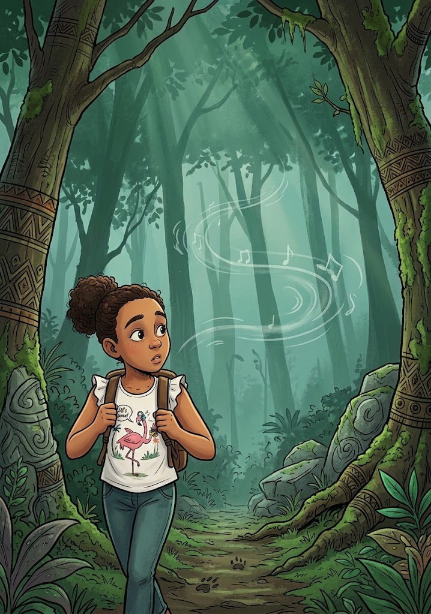
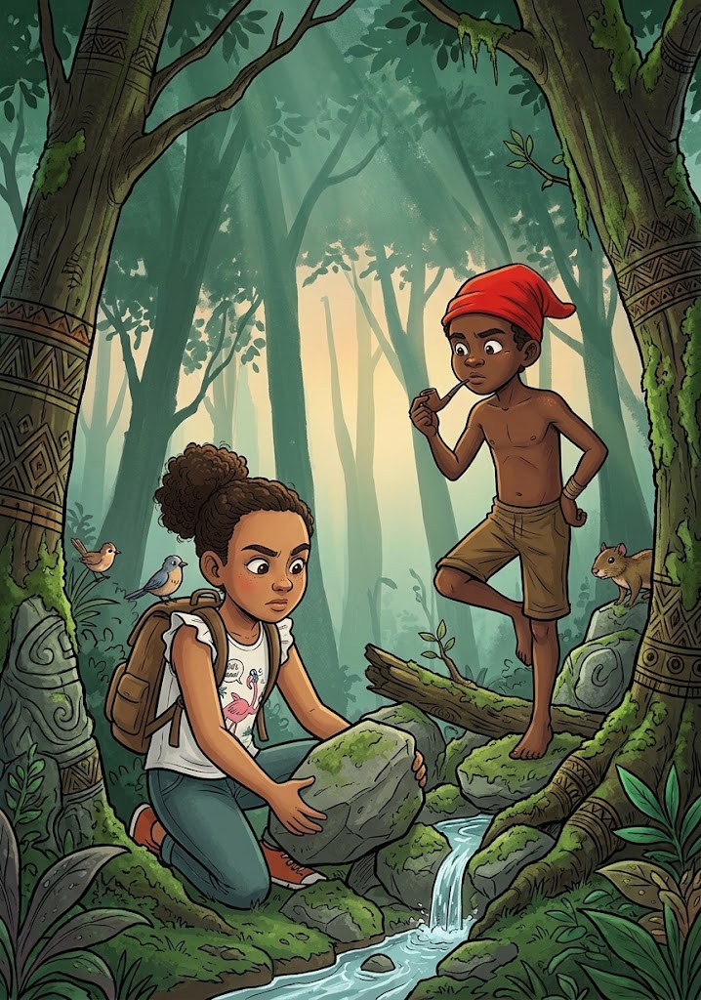
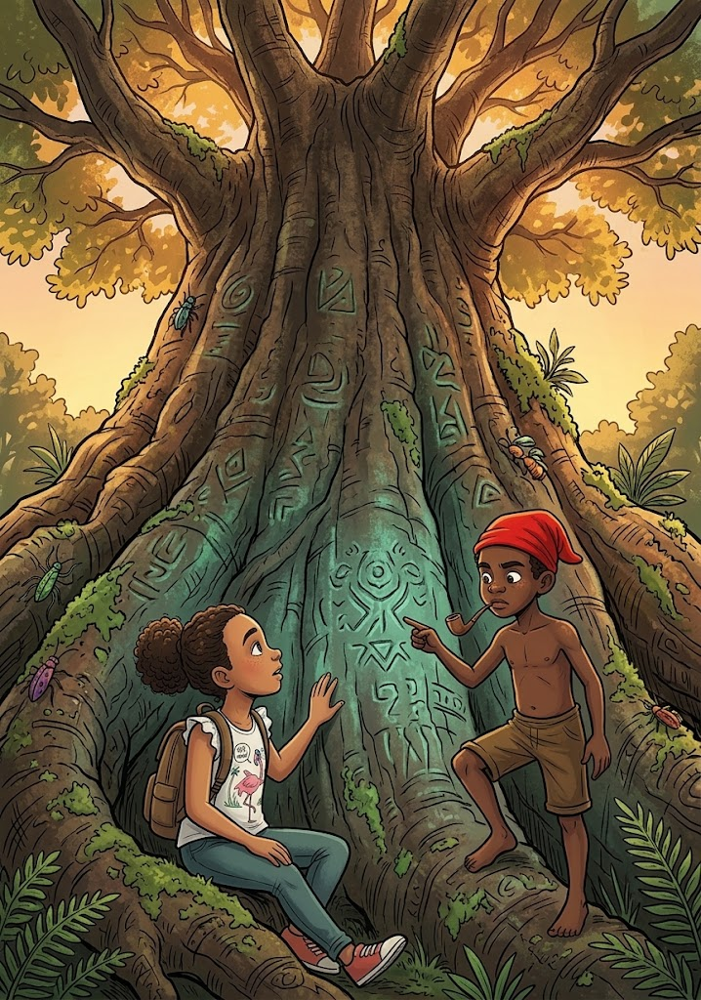
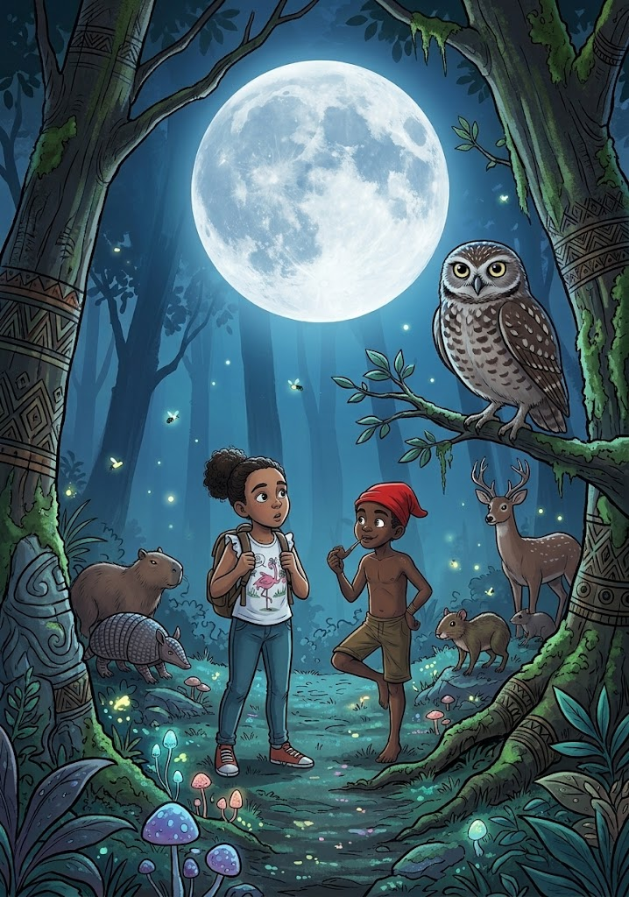
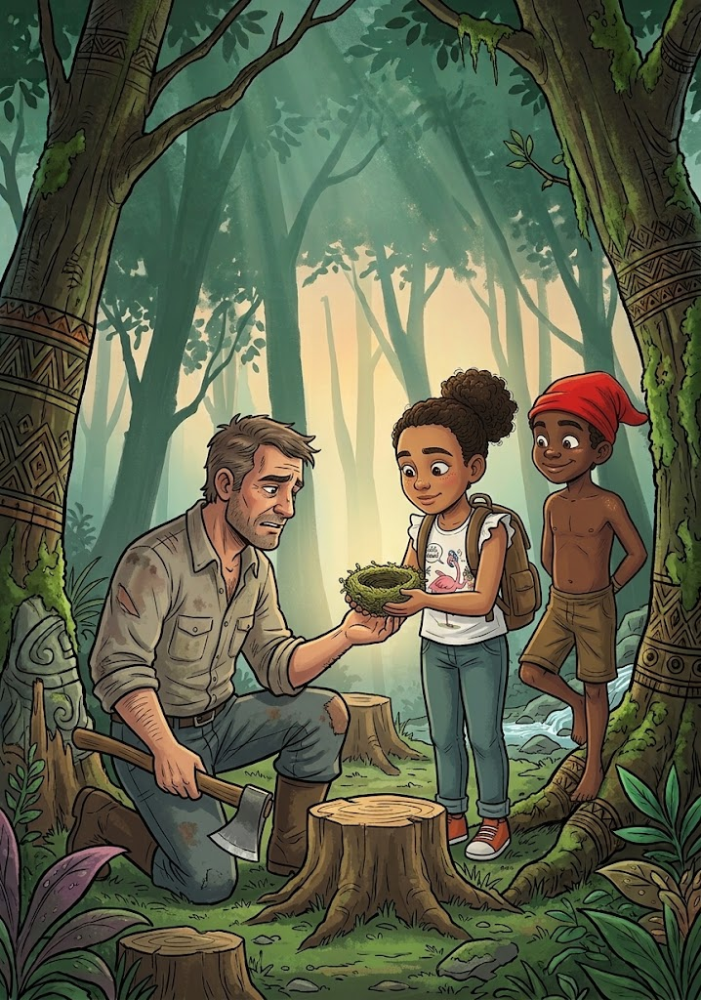
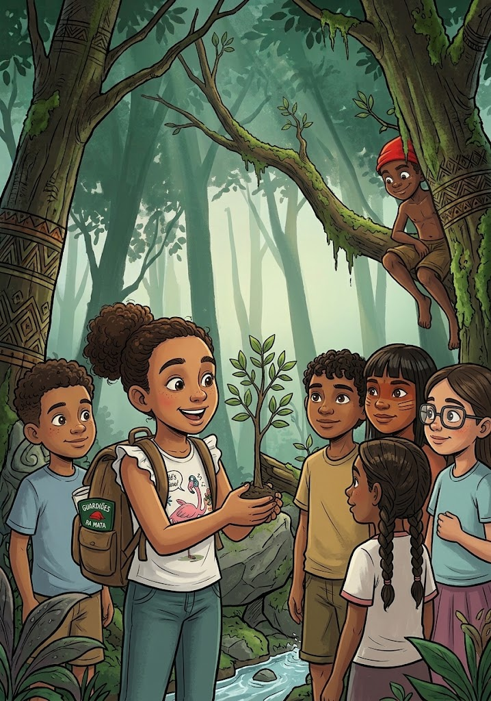
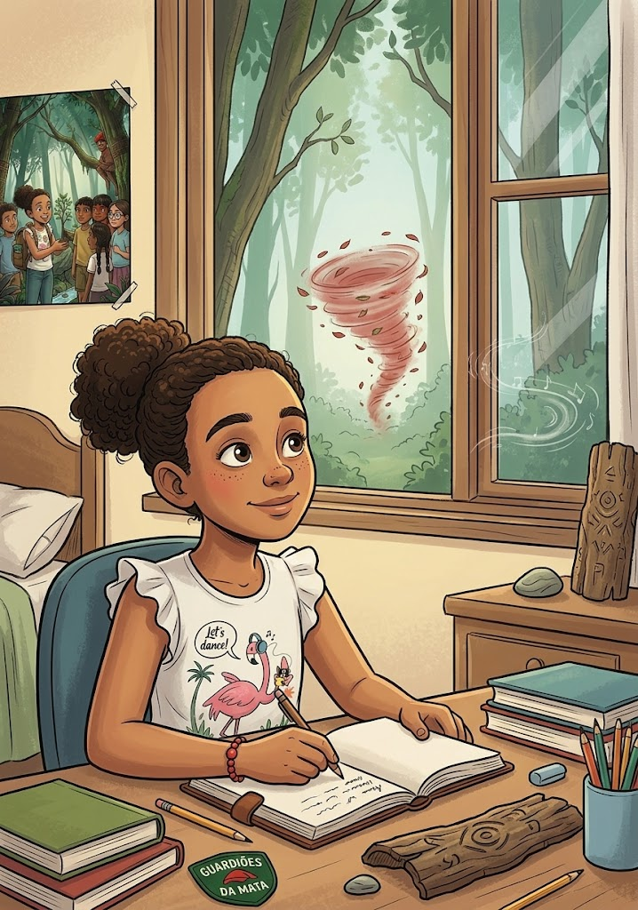

Angélica tem apenas 10 anos, mas possui uma curiosidade que parece não caber dentro dela.
Em uma tarde de férias, enquanto explora uma pequena mata próxima de sua casa, a menina encontra uma trilha que nunca havia percebido antes. No caminho, descobre marcas estranhas no chão, ouve um assobio vindo do meio das árvores e encontra um misterioso gorro vermelho preso em um galho.
Quando tenta devolvê-lo ao dono, Angélica conhece ninguém menos que o Saci, uma figura travessa e misteriosa do imaginário popular brasileiro.
Mas aquele Saci é diferente das histórias que Angélica conhecia.
Ele não está ali apenas para fazer travessuras.
Ele é um guardião da floresta.
A mata está perdendo sua força. Alguns animais desapareceram, árvores antigas estão sendo derrubadas e uma nascente que alimentava vários seres começa a secar.
Segundo o Saci, existe uma antiga regra:
"Quando os humanos esquecem de escutar a floresta, a floresta começa a ficar em silêncio."
Para salvar a mata, Angélica precisará aprender que coragem não significa não ter medo. Significa continuar caminhando mesmo quando o medo aparece.
Ao lado do Saci, ela embarcará em uma aventura envolvendo árvores antigas, animais encantados, histórias dos ancestrais, espíritos protetores da natureza e uma antiga ameaça escondida no coração da floresta.
Mas, para vencer, Angélica descobrirá que não precisa de força extraordinária.
Precisa aprender a respeitar, ouvir e cuidar.
Capítulo 1: O Assobio no Meio da Mata

Angélica gostava de aventuras.
Gostava de subir em árvores, descobrir caminhos novos e imaginar que cada lugar escondia uma história.
Naquele sábado, ela caminhava perto da mata que ficava atrás da casa de sua avó.
Angélica! gritou sua avó da varanda. Não vá muito longe!
Eu não vou! respondeu a menina.
Ela deu três passos.
Depois mais cinco.
Depois mais dez.
E, quando percebeu, já estava diante de uma trilha que nunca havia visto.
Ué...
A trilha era estreita e cercada por folhas.
Angélica olhou para trás.
A casa parecia mais distante.
Só vou até aquela árvore.
Foi quando ouviu:
Fiiiiiiiiiu!
Um assobio atravessou a mata.
Angélica parou.
Tem alguém aí?
Silêncio.
Ela continuou andando.
Fiu!
Dessa vez, o assobio veio de trás dela.
Angélica virou rapidamente.
Nada.
Muito engraçado...
De repente, uma pequena criatura apareceu sobre um tronco.
Usava um gorro vermelho.
Tinha apenas uma perna.
E estava sorrindo.
Você sempre conversa sozinha?
Angélica arregalou os olhos.
Você... você é o Saci!
Depende.
Como assim, depende?
O menino de uma perna só inclinou a cabeça.
Se você acredita que eu sou, talvez eu seja.
Angélica colocou as mãos na cintura.
Isso não faz sentido.
Na floresta, menina, muitas coisas não fazem sentido para quem só olha. É preciso aprender a enxergar.
Você é mesmo o Saci?
Ele sorriu.
Sou conhecido por muitos nomes. Mas pode me chamar de Saci.
Angélica olhou para o gorro.
Você perdeu isso?
O Saci imediatamente levou a mão à cabeça.
Meu gorro!
Angélica pegou o objeto que havia encontrado no caminho.
Estava preso naquela árvore.
O Saci pegou o gorro e o colocou novamente.
Obrigado.
Então seu sorriso desapareceu.
Agora preciso de sua ajuda.
Minha?
Sim.
Por quê?
O Saci olhou para as árvores.
Porque a floresta está ficando doente.
Angélica franziu a testa.
Floresta fica doente?
Quando as pessoas deixam de cuidar dela, sim.
Um vento atravessou as folhas.
O Saci apontou para uma árvore enorme.
Aquela árvore tem mais histórias do que você consegue imaginar.
Angélica se aproximou.
E você sabe todas?
Não.
Então quem sabe?
O Saci respondeu baixinho:
Os antigos.
Quem são os antigos?
Ele sorriu.
Essa é uma pergunta para amanhã.
Amanhã?
O Saci desapareceu em um redemoinho de folhas.
Ei! Volta aqui!
Só ficou o assobio.
Fiiiiiiiiiu!
Angélica olhou para a mata.
Naquele momento, percebeu que sua aventura havia começado.
A curiosidade pode abrir portas para grandes descobertas, mas devemos aprender a caminhar com respeito por aquilo que ainda não conhecemos.
Capítulo 2: O Guardião de Uma Perna Só

Na manhã seguinte, Angélica voltou à mata.
Dessa vez, levou uma garrafinha de água e uma pequena mochila.
Saci!
Nada.
Saci!
Um graveto caiu em sua cabeça.
Ai!
Uma risada veio de cima.
Procurando alguém?
Angélica olhou para uma árvore.
O Saci estava sentado em um galho.
Você poderia parar de jogar coisas em mim?
Poderia.
E vai?
Não.
Angélica respirou fundo.
Você disse que precisava da minha ajuda.
O Saci ficou sério.
Preciso.
Ele pulou do galho e caiu em pé.
A floresta possui lugares que os humanos quase esqueceram.
Que lugares?
A nascente, a árvore dos ancestrais e a clareira da Lua.
E o que aconteceu?
Alguém está destruindo o equilíbrio da mata.
Angélica ficou preocupada.
Quem?
O Saci apontou para o chão.
Havia pegadas.
Humanos.
Como você sabe?
Porque os animais não usam botas.
Angélica se abaixou.
—
Eles estão cortando árvores?
— Algumas.
— Então precisamos chamar os adultos!
O Saci sorriu.
— Finalmente você disse algo inteligente.
— Ei!
Ele riu.
— Mas existe algo que você pode fazer primeiro.
— O quê?
— Aprender a ouvir.
— Ouvir o quê?
O Saci fechou os olhos.
— A floresta.
Angélica achou aquilo estranho.
Mas fechou os olhos também.
Primeiro ouviu os pássaros.
Depois o vento.
Depois folhas se mexendo.
E então...
Um som fraco.
Ploc... ploc... ploc...
— Água!
O Saci abriu os olhos.
— Exatamente.
— Vem da nascente?
— Sim.
Os dois seguiram o som.
Encontraram uma pequena nascente parcialmente coberta por galhos e pedras.
Angélica retirou alguns galhos.
— Está presa.
— Não toque em tudo — disse o Saci. — Algumas coisas devem ser deixadas como estão.
Angélica parou.
— Então como vamos ajudar?
— Com cuidado.
Eles trabalharam juntos.
Quando retiraram a última pedra, a água voltou a correr.
O Saci sorriu.
— Viu?
— O quê?
— Nem toda ajuda precisa fazer barulho.
Nossos pensamentos têm poder. Cuidar do que pensamos e sentimos é a melhor forma de espalhar a luz pelo mundo.
Capítulo 3: A Ponte do Perdão

Conforme avançavam, o cenário mudou para um vale calmo, cortado por um rio de águas prateadas. Do outro lado da ponte, Angélica avistou uma garotinha emburrada. Era Sofia, sua colega de escola com quem havia discutido na semana anterior.
O que a Sofia faz aqui? perguntou Angélica, cruzando os braços. Ela foi muito chata comigo.
Dona Maria sentou-se em uma pedra à beira do rio e chamou Angélica para perto.
Muitas vezes, as pessoas nos magoam porque também estão machucadas por dentro. O rancor é como carregar uma pedra pesada na mochila: só faz mal para quem carrega.
Angélica olhou para a mochila invisível de suas mágoas e percebeu como aquilo a deixava cansada. Ela deu um passo à frente, atravessou a ponte e disse baixinho: "Eu desculpo você, Sofia."
No mesmo instante, a sensação de peso sumiu do peito de Angélica. A imagem de Sofia sorriu docemente antes de desaparecer como um sopro de brisa.
O perdão não muda o passado, Angélica, mas liberta o seu futuro
ensinou Dona Maria, dando-lhe um abraço quentinho.
Perdoar não significa concordar com o erro do outro, mas libertar o próprio coração do peso da raiva.
Capítulo 4: O Hospital das Luzes de Ouro

Dona Maria conduziu Angélica até uma floresta exuberante, onde a grama brilhava como esmeralda e pequenas luzes pisca-pisca dançavam entre as flores. Não eram vaga-lumes, mas sim pequenos espíritos protetores das plantas e dos animais.
Uau, as flores parecem sussurrar! exclamou Angélica, ajoelhando-se para ver uma orquídea reluzente.
E estão sussurrando mesmo sorriu Dona Maria. A natureza é viva no plano físico e no espiritual. Todos os animais, árvores e rios possuem uma energia sagrada. Quando você cuida de uma planta ou trata um animal com carinho na Terra, essa energia de amor ecoa por todo o plano espiritual.
Uma pequena raposa feita de luz aproximou-se e encostou o focinho na mão de Angélica, que sentiu uma onda de carinho imediata.
Prometo que nunca mais vou pisar nas flores de propósito ou ignorar um bichinho precisando de ajudadisse a menina, de olhos brilhando.
Respeitar e proteger a natureza e os animais é uma forma de honrar a vida e manter a harmonia do universo.
Capítulo 5: O Hospital das Luzes de Ouro

Dona Maria suavemente segurou a mão de Angélica e as duas voaram até um grande edifício que parecia feito de mármore e raios de sol. Lá dentro, vários trabalhadores espirituais com túnicas brancas cuidavam de almas que pareciam cansadas ou tristes.
Este é um dos hospitais do plano astral explicou a senhora sábia. Aqui acolhemos aqueles que passaram por momentos difíceis e precisam restaurar a sua paz e a sua fé.
Angélica observou uma senhora idosa que recebia uma luz azul no peito dada por um dos enfermeiros espirituais. Aos poucos, o rosto da idosa relaxou e ganhou um tom saudável.
Nós também podemos ajudar daqui? perguntou a garota, curiosa.
— Com certeza! Sempre que você faz uma oração sincera ou envia um bom desejo para alguém que está doente ou triste na Terra, os médicos espirituais usam essa sua energia de amor para levar alívio a quem precisa.
Angélica fechou os olhos e pensou em seu avô, enviando-lhe todo o seu carinho em forma de uma luz dourada.
Fazer o bem e desejar a cura do próximo ativa forças invisíveis capazes de levar alívio e esperança até onde não podemos alcançar fisicamente.
Capítulo 6: O Templo da Memória e do Aprendizado

Em seguida, elas chegaram a uma grande biblioteca sem paredes, cujas prateleiras de luz flutuavam no ar. Cada livro parecia contar a história de uma vida cheia de aprendizados.
Por que precisamos passar por dificuldades no mundo físico, Dona Maria? Às vezes as coisas parecem injustas ou difíceis desabafou Angélica.
Dona Maria tirou uma pequena semente brilhante do bolso do avental e a colocou na mão de Angélica.
Para que esta semente virar uma grande árvore, ela precisa ficar no escuro da terra, enfrentar chuvas fortes e empurrar a terra para cima até ver o sol. Os desafios da vida física são como a chuva e a terra. Eles não vêm para nos destruir, mas para nos ensinar a ser fortes, sábios e pacientes.
Angélica olhou para a semente, que começou a brotar na sua mão em uma linda flor de luz. ela compreendeu que cada erro e cada desafio na escola ou em casa eram apenas etapas para se tornar uma pessoa melhor.
As dificuldades da vida não são punições, mas lições valiosas que fazem nossa alma crescer e evoluir
Capítulo 7: O Despertar Radiante

Angélica abriu os olhos devagar em seu quarto físico. O sol da manhã atravessava as O horizonte astral começou a se tingir de tons dourados, rosas e lilás. O sol no mundo físico estava prestes a nascer, anunciando que era hora de retornar.
Nossa jornada de hoje está chegando ao fim, minha pequena guardiã disse Dona Maria, com a voz tomada por um carinho profundo. É hora de voltar para o seu corpo e acordar para um novo dia.
Ah, Dona Maria... vou sentir tanto a sua falta! E se eu esquecer de tudo o que aprendi aqui? perguntou a menina, segurando a mão da mentora.
A sua mente consciente pode até esquecer alguns detalhes ao acordar, mas o seu coração guardará a essência de tudo. Sempre que se sentir sozinha, lembre-se de que o amor une todos os mundos e que nunca, jamais, você estará só.
Dona Maria tocou suavemente a testa de Angélica. A menina sentiu uma onda de paz e aconchego indescritíveis. A paisagem ao redor foi se transformando em uma névoa suave e quentinha.
cortinas, iluminando o ambiente. Ela respirou fundo, sorriu com a alma leve e levou as mãos ao peito. Sabia que aquele seria o primeiro dia do resto de sua vida: um dia repleto de paz, luz e amor por todos os seres.
Créditos
Título Original: O Relógio de Estrelas e o Voo de Angélica
Desenvolvimento e Roteiro: Criado para jovens leitores e amantes de histórias edificantes.
Personagens Principais:
Angélica: Uma garota de 10 anos, curiosa, corajosa e de coração puro.
Dona Maria: Uma mentora espiritual amorosa, protetora e cheia de sabedoria.
Gênero: Infanto-juvenil / Espiritualista / Literatura para dormir
Público-Alvo: Crianças a partir de 11 anos e leitores de todas as idades que buscam paz, esperança e boas lições antes de descansar.